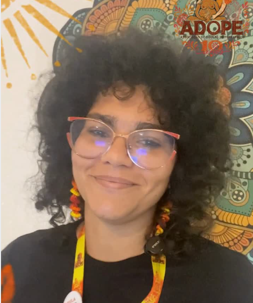

Acompanhamento de gestantes e puérperas, práticas integrativas e formação de doulas — encontros presenciais ou online, individuais e coletivos.

Do pré-natal ao puerpério, uma doula ao seu lado: preparação para o parto, plano de parto, amamentação e os primeiros 60 dias com o bebê — com escuta, presença e informação baseada em evidências.
Fitoterapia, aromaterapia, auriculoterapia, meditação, yoga, reflexologia e massagem — práticas seguras que acolhem o corpo e as emoções da mãe em cada fase.
Formação de doulas e treinamentos para profissionais de saúde que desejam um cuidado perinatal mais humano — teoria, prática e vivência.
Plantas seguras que apoiam o bem-estar da mãe em cada fase.
Aromas para relaxar, acolher e criar um ambiente de calma.
Estímulo à produção de leite e redução da ansiedade.
Calma, consciência e conexão com o bebê.
Alívio de desconfortos físicos e equilíbrio hormonal.
Bem-estar físico e apoio à descida do leite.
120h de teoria, prática e vivência para acompanhar gestação, parto e puerpério.
Presencial + online · Próxima turma em marçoPara profissionais de saúde: fitoterapia, aromaterapia e auriculoterapia com segurança.
Online ao vivo · 40hUm dia de imersão em apoio à amamentação para doulas e famílias.
Presencial · 8hA Germinar nasceu do desejo de acolher a mulher por inteiro — corpo, emoções e história. Nossa equipe reúne doulas, educadoras perinatais e terapeutas integrativas com formação e vivência em gestação, parto e puerpério.
Pelas redes sociais ou telefone — o primeiro passo é uma conversa.
Germinar · Do pré-natal ao puerpério de 60 dias · {{ email }}